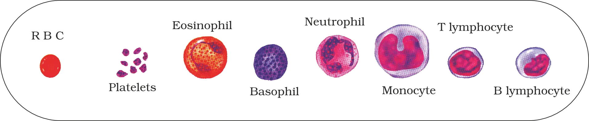
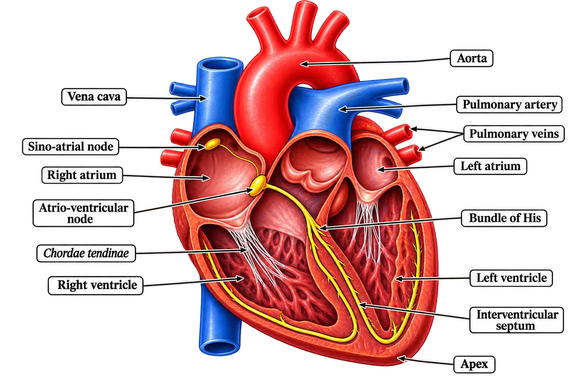
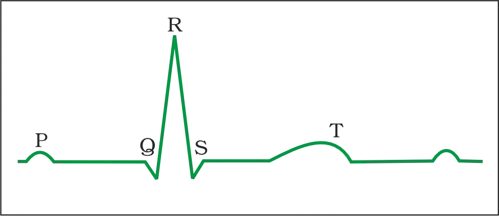

BODY FLUIDS AND CIRCULATION
Body Fluids and Circulation (Introduction)
Simple animals (sponges, coelenterates)
Circulate surrounding water through body cavities to allow exchange of substances with cells
Complex animals
Use specialised internal body fluids for transport
Major transport fluids in humans
Blood (primary) and lymph (helps transport certain substances)
Blood
- Fluid matrix = plasma
- Formed elements = erythrocytes (RBCs), leucocytes (WBCs), platelets
Plasma
- Appearance: straw-coloured, viscous fluid
- Proportion of blood: ~55%
- Water content: ~90–92%
- Proteins: ~6–8%
Fibrinogen
Required for blood clotting/coagulation
Globulins
Mainly involved in defence mechanisms
Albumins
Help maintain osmotic balance
- Mineral ions: Na+, Ca++, Mg++, HCO3–, Cl–, etc.
- Nutrients/transported molecules in transit: glucose, amino acids, lipids, etc.
- Clotting factors: present in plasma largely in inactive form
Formed Elements
Erythrocytes (RBCs)
- Most abundant blood cells
- Count (healthy adult man): ~5.0–5.5 million mm–3 of blood
- Site of formation in adults: red bone marrow
- Nucleus: absent in most mammals (RBCs are enucleated)
- Shape: biconcave
- Pigment: haemoglobin (iron-containing complex protein) gives red colour
- Haemoglobin concentration (healthy individual): 12–16 g per 100 mL blood
- Function: important in transport of respiratory gases
- Life span: ~120 days
- Destruction site: spleen (“graveyard of RBCs”)
Formed in: Red bone marrow (adults)
→
Circulate ~120 days
→
Destroyed mainly in: Spleen
Leucocytes (WBCs)
- Called white blood cells because they are colourless (lack haemoglobin)
- Nucleated
- Count: ~6000–8000 mm–3 of blood
- Generally short-lived
Granulocytes
Neutrophils, Eosinophils, Basophils
Agranulocytes
Lymphocytes, Monocytes
Granulocytes
- Neutrophils: most abundant WBCs, ~60–65% of total WBCs
- Eosinophils: ~2–3% of total WBCs
- Basophils: least abundant, ~0.5–1% of total WBCs
- Neutrophils are phagocytic (destroy foreign organisms).
- Basophils secrete histamine, serotonin, heparin etc.; involved in inflammatory reactions.
- Eosinophils resist infections and are also associated with allergic reactions.
Agranulocytes
- Monocytes: ~6–8% of total WBCs; phagocytic (destroy foreign organisms).
- Lymphocytes: ~20–25% of total WBCs; major types = B lymphocytes and T lymphocytes.
NEB
Platelets (Thrombocytes)
- Also called: thrombocytes
- Nature: cell fragments (not complete cells)
- Origin: produced from megakaryocytes (special bone marrow cells)
- Count: ~1,50,000–3,50,000 mm–3 of blood
- Role: release substances involved in coagulation/clotting
Megakaryocytes (bone marrow)
→
Platelets (cell fragments)
→
Coagulation / clotting

Blood Groups
ABO systemBased on A/B antigens on RBC surface
Rh systemAnother major blood grouping used globally (details covered later in chapter)
ABO Grouping
Group ARBC: Antigen A • Plasma: anti-B • Receives from A, O
Group BRBC: Antigen B • Plasma: anti-A • Receives from B, O
Group ABRBC: Antigens A & B • Plasma: nil antibodies • Receives from AB, A, B, O
Group ORBC: nil antigens • Plasma: anti-A & anti-B • Receives from O only
- Universal donor: Group O (can donate to any ABO group).
- Universal recipient: Group AB (can accept from any ABO group).
Rh Grouping
Rh positive (Rh+ve)Rh antigen present on RBC surface
Rh negative (Rh−ve)Rh antigen absent on RBC surface
Rh Incompatibility in Pregnancy (Erythroblastosis Foetalis)
First pregnancy (Rh− mother, Rh+ foetus)
→
Foetal Rh antigens usually not exposed to mother (placenta separates blood)
During delivery of first child
→
Small amount of Rh+ foetal blood may enter mother
→
Mother starts producing anti-Rh antibodies
Coagulation (Clotting) of Blood
Biochemical Sequence of Clot Formation
Inactive fibrinogen (plasma)
→
Fibrin threads
Inactive prothrombin (plasma)
→
Thrombin
- Platelets release certain factors when stimulated by injury/trauma → activates coagulation mechanism.
- Tissues at injury site also release factors that can initiate coagulation.
Lymph (Tissue Fluid)
Blood in capillaries (tissues)
→
Water + small solutes filter out
→
Fluid between cells = tissue fluid
Moves outwater + small water-soluble substances
Stays in bloodlarger proteins + most formed elements
Think of tissue fluid as the “middle layer” — blood doesn’t hand nutrients directly to every cell; it passes them into this fluid first.
Lymphatic System and Lymph
Tissue fluid (between cells)
→
Collected by lymphatic vessels
→
Drained to major veins
- Colour: Lymph is colourless.
- Cells: Contains specialised lymphocytes.
- Function: Lymphocytes are responsible for immune responses.
- Transport: Lymph carries nutrients and hormones, etc.
Fats (in intestine)
→
Lacteals (intestinal villi)
→
Lymph
Circulatory Pathways
Open vs Closed Circulatory System
Open circulatory systemBlood pumped by heart enters large vessels then flows into open spaces/body cavities called sinuses
Closed circulatory systemBlood pumped by heart remains within a closed network of blood vessels
ArthropodsOpen circulatory system
MolluscsOpen circulatory system
AnnelidsClosed circulatory system
ChordatesClosed circulatory system
Heart Chambering Across Vertebrates
Fishes2-chambered: 1 atrium + 1 ventricle
Amphibians3-chambered: 2 atria + 1 ventricle
Reptiles (except crocodiles)3-chambered: 2 atria + 1 ventricle
Crocodiles4-chambered: 2 atria + 2 ventricles
Birds4-chambered: 2 atria + 2 ventricles
Mammals4-chambered: 2 atria + 2 ventricles
Single, Incomplete Double, and Double Circulation
Heart (deoxygenated)
→
Gills (oxygenation)
→
Body tissues
→
Back to heart
- Left atrium receives oxygenated blood from gills/lungs/skin.
- Right atrium receives deoxygenated blood from body parts.
- Both mix in the single ventricle → ventricle pumps mixed blood.
Left atrium (O₂ blood)
+
Right atrium (deO₂ blood)
→
Single ventricle (mixing)
→
Mixed blood pumped out
Human Circulatory System

Heartmuscular, chambered pump
Blood vesselsclosed, branching network
Bloodcirculating fluid
Position, Origin, Protection of Heart
- Origin: Heart is mesodermally derived.
- Location: In the thoracic cavity, between the two lungs, slightly tilted to the left.
- Size: Approximately the size of a clenched fist.
- Covering: Protected by a double-walled membranous bag called pericardium.
- Pericardial fluid: Pericardium encloses pericardial fluid.
Quick picture: fist-sized pump, between lungs, slightly left — wrapped in a double bag (pericardium) with fluid for smooth movement.
Chambers and Septa
Atria2 upper, smaller chambers
Ventricles2 lower, larger chambers
Inter-atrial septumThin muscular wall separating right & left atria
Inter-ventricular septumThick-walled septum separating left & right ventricles
Atrio-ventricular septumThick fibrous tissue separating atrium and ventricle of the same side
Valves Between Atria and Ventricles
Tricuspid valveRight AV opening • 3 cusps
Bicuspid (mitral) valveLeft AV opening • 2 cusps
L-M
Heart Valves, Cardiac Muscles & Nodal Tissue
- Atria → Ventricles (via atrio-ventricular valves: tricuspid and bicuspid/mitral)
- Ventricles → Pulmonary artery / Aorta (via semilunar valves)
- They prevent backward flow of blood.
Think of valves like “one-way doors” in hallways—once blood passes, the door shuts to stop it coming back.
Nodal Tissue (Specialised Cardiac Musculature) & Conducting System
Sino-atrial node (SAN)Patch of nodal tissue in the right upper corner of the right atrium
Atrio-ventricular node (AVN)Mass of nodal tissue in the lower left corner of the right atrium, near the atrio-ventricular septum
AV bundle (Bundle of His)Bundle of nodal fibres from AVN; passes through atrio-ventricular septa to the top of the interventricular septum
Right & Left bundle branchesAV bundle divides into right and left bundle
Purkinje fibresMinute fibres arising from bundle branches; spread throughout the ventricular musculature of respective sides
Cardiac Cycle
Sequence of Events in One Cardiac Cycle
Joint diastole (all chambers relaxed)
→
Atrial systole (atria contract)
→
Ventricular systole (ventricles contract)
→
Ventricular diastole (ventricles relax)
→
Return to joint diastole
- Start: Joint diastole — all four chambers are relaxed.
- AV valves open (tricuspid and bicuspid/mitral); semilunar valves closed.
- Blood flows from pulmonary veins into the left atrium and from vena cava into the right atrium, and then into the ventricles through open AV valves.
- SAN fires → action potential stimulates both atria → simultaneous atrial contraction = atrial systole.
- Atrial systole increases ventricular filling by ~30%.
- Impulse conducted to ventricular side via AVN and AV bundle; from there the bundle of His transmits it through the ventricular musculature.
- This triggers ventricular systole (ventricular contraction) while atria relax (atrial diastole) coinciding with ventricular systole.
- Rising ventricular pressure closes tricuspid and bicuspid valves (closure due to attempted backflow into atria).
- Further rise in ventricular pressure forces open semilunar valves guarding pulmonary artery (right) and aorta (left) → blood enters circulatory pathways.
- Ventricles then relax = ventricular diastole → ventricular pressure falls → semilunar valves close to prevent backflow into ventricles.
- As ventricular pressure declines further, atrial pressure pushes tricuspid and bicuspid valves open → blood moves freely into ventricles again.
- Heart returns to joint diastole; SAN fires again and the sequence repeats.
Cardiac Cycle Duration, Stroke Volume & Cardiac Output
Heart Sounds (Clinical Significance)
First heart sound (lub)Due to closure of tricuspid and bicuspid (mitral) valves
Second heart sound (dub)Due to closure of semilunar valves
Electrocardiogram (ECG)

Standard ECG: Lead Placement
- One to each wrist
- One to the left ankle
Waves/Complexes in ECG (P to T) and Their Meaning
P-waveAtrial depolarisation (electrical excitation) → leads to contraction of both atria
QRS complexVentricular depolarisation → initiates ventricular contraction; contraction starts shortly after Q and marks beginning of systole
T-waveVentricular repolarisation (return to normal state); end of T marks end of systole
- Heart rate from ECG: Count the number of QRS complexes in a given time period to determine heartbeat rate.
- Clinical significance: ECG shape is roughly similar among individuals for a given lead configuration; deviation from normal shape indicates possible abnormality or disease.
Double Circulation
Pulmonary circulation(heart ↔ lungs)
Systemic circulation(heart ↔ body tissues)
Structure of Arteries and Veins (Three Layers)
Tunica intimaInner lining of squamous endothelium
Tunica mediaMiddle layer of smooth muscle and elastic fibres
Tunica externaExternal fibrous connective tissue with collagen fibres
Pulmonary Circulation (Right Heart → Lungs → Left Heart)
Right ventricle
→
Pulmonary artery (deoxygenated)
→
Lungs
→
Pulmonary veins (oxygenated)
→
Left atrium
- Right ventricle pumps blood into the pulmonary artery.
- This blood is deoxygenated and is carried to the lungs.
- From lungs, oxygenated blood is carried by pulmonary veins into the left atrium.
- This complete pathway is the pulmonary circulation.
Systemic Circulation (Left Heart → Tissues → Right Heart)
Left ventricle
→
Aorta (oxygenated)
→
Arteries → arterioles → capillaries (tissues)
→
Venules → veins → vena cava (deoxygenated)
→
Right atrium
- Left ventricle pumps blood into the aorta.
- Oxygenated blood goes through a network: arteries → arterioles → capillaries to reach tissues.
- From tissues, deoxygenated blood is collected by: venules → veins → vena cava and emptied into the right atrium.
- This pathway is the systemic circulation.
- Delivers nutrients, O2 and other essential substances to tissues
- Removes CO2 and other harmful substances for elimination
Hepatic Portal Connection (Introduction)
Hepatic Portal System & Coronary Circulation
Regulation of Cardiac Activity
Myogenic (Intrinsic) Regulation
Neural Regulation via Medulla Oblongata and Autonomic Nervous System (ANS)
Sympathetic nervesIncrease heartbeat rate, ventricular contraction strength, and cardiac output
Parasympathetic nervesDecrease heartbeat rate, slow conduction of action potential, and reduce cardiac output
Adrenal medullary hormonesIncrease cardiac output (hormonal support to “fight/flight”)
- Sympathetic stimulation → ↑ heart rate, ↑ force of ventricular contraction → ↑ cardiac output.
- Parasympathetic stimulation → ↓ heart rate, ↓ speed of action potential conduction → ↓ cardiac output.
- Adrenal medullary hormones also act to ↑ cardiac output.
Disorders of Circulatory System
High Blood Pressure (Hypertension)
- 120 mm Hg = systolic (pumping pressure)
- 80 mm Hg = diastolic (resting pressure)
Coronary Artery Disease (CAD) / Atherosclerosis
Calcium + fat + cholesterol + fibrous tissue deposit in artery wall
→
Lumen narrows
→
Reduced blood flow to cardiac muscle
Angina (Angina Pectoris)
- Can occur in men and women of any age, but is more common in middle-aged and elderly.
- Occurs due to conditions that affect blood flow (hence oxygen delivery) to cardiac muscle.
Think of the heart muscle like a runner: when oxygen delivery drops, it “complains” as chest pain (angina).
Heart Failure (Congestive Heart Failure)
- Heart failure ≠ cardiac arrest (heart stops beating)
- Heart failure ≠ heart attack (heart muscle suddenly damaged due to inadequate blood supply)
Chapter Summary
Body Fluids: Blood and Lymph
RBCs (erythrocytes)Formed element of blood
WBCs (leucocytes)Formed element of blood
Platelets (thrombocytes)Formed element of blood
- protein content (lower than blood)
- formed elements (differ from blood)
Circulatory System Type and Basic Plan
Heart Structure and Pacemaker
- Heart has two atria and two ventricles.
- Cardiac musculature is auto-excitable.
Cardiac Cycle: Systole and Diastole
- from atria → ventricles
- from ventricles → pulmonary artery and aorta
Stroke Volume and Cardiac Output
Electrical Activity of Heart: ECG
Double Circulation: Pulmonary and Systemic
Right ventricle pumps deoxygenated blood
→
Lungs (oxygenation)
→
Left atrium receives oxygenated blood
Left ventricle pumps oxygenated blood to aorta
→
Body tissues (O₂ delivered)
→
Veins return deoxygenated blood to right atrium